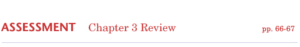
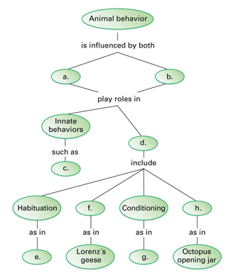
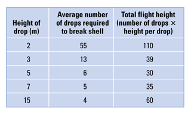
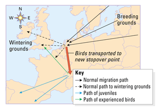

Reviewing Concepts
Multiple Choice
Choose the letter of the best answer.
1. What is the immediate cause of a fixed action pattern?
a. a stimulus and a response
b. the task
c. the ability to perform important tasks without practice
d. imprinting
2. Researchers who studied flying squirrels found that the squirrels
that were kept in complete darkness
a. lost their ability to keep rhythms.
b. maintained identical rhythms to the control squirrels.
c. had rhythms that varied slightly from 24 hours.
d. never returned to normal daily rhythms even after the study
was complete.
3. Ants remove dead ants from the anthill. If a live ant is painted
with a chemical of a dead ant, other ants carry it out of the anthill
even as it kicks and struggles. When the ant returns to the anthill, they
carry it out again. Which of the following best describes this behavior?
a. The chemical triggers a fixed action pattern.
b. The ants have become imprinted on the chemical.
c. The ants continue the behavior until they become habituated.
d. The ants can learn only by trial and error.
4. Your brain ignores the constant sensations of touch from your
clothing because of
a. imprinting.
b. habituation.
c. operant conditioning.
d. fixed action pattern.
5. Swimming in a large school protects certain fish from predators,
who may see the school as a single large organism. The schooling behavior
is most likely an example of
a. aggressive behavior.
b. insight.
c. territoriality.
d. cooperation.
Short Answer
6. Compare and contrast immediate and ultimate causes of behavior.
Give an example of each.
7. Compare and contrast innate and learned behavior.
8. Describe one hypothesis that explains how habituation benefits
animals.
9. What is a fixed action pattern? Describe an example of a fixed
action pattern exhibited by the graylag goose.
10. Describe two hypotheses about play behavior.
11. What are courtship rituals? Discuss how these rituals may
benefit animals.
12. What is one hypothesis that could explain how a dominance
hierarchy benefits the animals in a social group?
Visualizing Concepts
13. Copy the concept map about behavior onto a separate sheet of
paper and complete it.

Applying Concepts
Analyzing Information
14. Analyzing Data Crows break the shells of certain mollusks before
eating them. Hypothesizing that crows drop the mollusks from a height
that gives the most food for the least effort, a researcher dropped shells
from different heights and counted the drops it took to break them.
a. Which height provides the most food for the least energy for
the crows? Explain.
b. If crows do fly to the most energy-efficient height, describe
an experiment to determine if this is learned or innate behavior.

15. Analyzing Diagrams Researchers captured birds at a point on
their normal migration route and moved them to a new location to the south.
a. Describe the path the experienced birds flew from the new location.
Describe the path of the inexperienced juvenile birds.
b. Does this graph support the hypothesis that these birds' migration
is a combination of innate and learned behaviors? Explain.

Critical Thinking
16. Making Generalizations A fish in an aquarium often swims to
the top when it sees a person approach. What type of learning could this
reflect? Explain your answer.
17. Giving an Example Give one example of how you have solved
a problem through insight.
18. Comparing and Contrasting Compare and contrast insight and
operant conditioning.
19. Making Generalizations Which social behavior discussed in
the chapter would you say is the foundation of all of the others? Explain
your choice.
20. What's Wrong With These Statements?
Briefly explain why
each statement is inaccurate or misleading.
a. Innate behaviors are influenced only by genes.
b. Once habituation has occurred an animal no longer senses a stimulus.
c. Circadian rhythms cannot exist without environmental cues.
Performance Assessment
Design an Experiment Male stickleback fish attack other male sticklebacks
that enter their territory. A biologist notices that the male fish also
behave aggressively whenever a red-colored object passes their tank. Since
male sticklebacks have red undersides, the biologist hypothesizes that
they do not respond to other sticklebacks, but rather to the color red.
Design a controlled experiment to test this hypothesis.